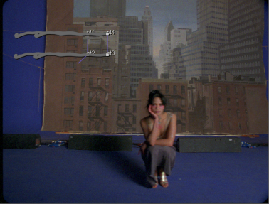
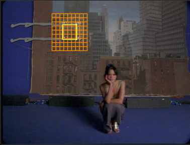
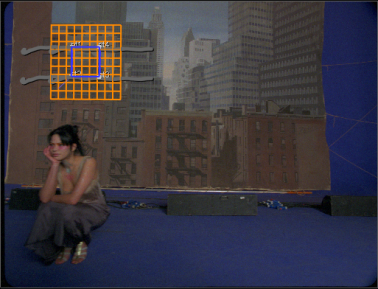
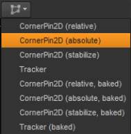
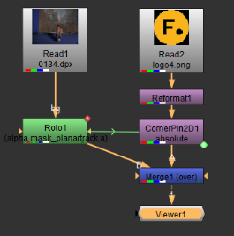

当您跟踪镜头上的平面曲面时，您可能需要在其上放置图像。要在跟踪的平面表面上放置图像，请执行以下操作:
| 1。 | 确保您位于绘制 roto 形状的参考框架上，并选择要在 创建 新 轨道 下拉列表位于查看器的顶部。 |

| 2. |
检查
显示平面
和
正确的平面
|
| 3. | 矩形在查看器中指示平面曲面。如果矩形非常大，您可以单击 调整大小 平面 表面 到 图像 按钮 在观众。 |
| 4. | 拖动矩形的角以覆盖要在其上放置图像的区域。单击 显示 网格 线 按钮 在查看器中使用引导网格定位矩形。 |

这将显示与当前平面相对应的网格线，并有助于重新对齐平面。
| 5. | 在时间线中擦洗，以确保平面表面粘到您想要的区域。 |

如果需要调整，可以执行以下操作之一:
• 调整参考系中的点以在整个素材中更改平面曲面。这样，您可以调整平面曲面矩形的实际尺寸。矩形以黄色显示。
• 调整其他帧中的点，以更改当前帧及其相邻帧中的平面曲面。这样，您可以在不改变其实际尺寸的情况下，更正平面曲面矩形中的小漂移。矩形以蓝色显示。
| 6. | 中的值 角点 显示平面如何从参考框架扭曲到当前框架。在中调整它们 曲线编辑器 通过选择 曲线编辑器 节点图上方的选项卡。 |
注意: 虽然你可以拖动 角点 数据到另一个节点或控件，只需拖动选择所有点并拖动任何动画按钮。如果你按 Ctrl / Cmd 拖动，这将创建到 角点 数据，而不是将它们放在新的位置。
| 7. | 阅读要放置在跟踪器平面表面上的图像。 |
| 8。 | 要将新图像转换为相同的格式，请插入一个重新格式化节点，并从 输出格式 下拉列表。 |
| 9. | 现在，您可以添加一个 CornerPin 节点来帮助您在平面上放置图像。单击 创建 CornerPin2D 节点 下拉浏览器 (或使用 出口 下拉菜单 (在 “属性” 面板中) 并选择要使用的拐角固定类型。 |

请参见的 “查看器中的跟踪器菜单选项” 部分 追踪一架飞机 有关不同类型的 CornerPin 的更多信息。
| 10. | 插入合并节点并将 CornerPin 节点连接到 一个 输入，以及 Roto 节点到 B 输入。您的节点树现在应该类似于下面所示: |

| 11。 | 现在，您可以对图像进行任何其他必要的更改。例如，您可以调整 混合 控制合并节点的属性，以更改图像的不透明度。 |
| 12. | 当你高兴时，关闭所有节点属性面板，在查看器中清楚地看到结果。你可以浏览时间线，并确保图像在 sorrect 中的位置。 |
|
|